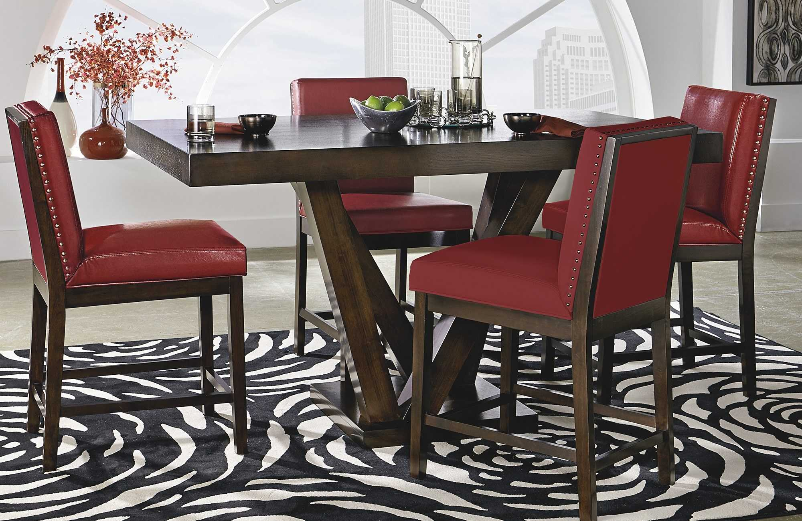

HI, I'M John, From NYC!
As a Product Designer with nearly 7 years of experience across multiple design
displines, i combine lean UX methodologies, HTML5, CSS3, Sass, javascript, and jquery
, to research, prototype, iterate , and implement simple, meangingfull, and
memorable experiance!
As projects clear NDA, i will add new projects.
New portofolio version
comming soon!
Recents Projects


